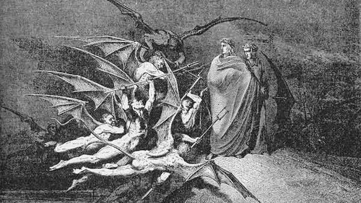
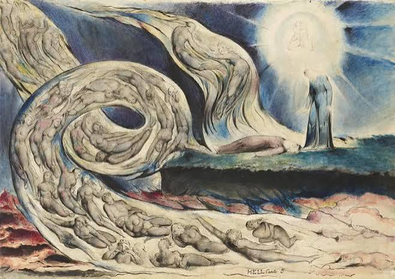
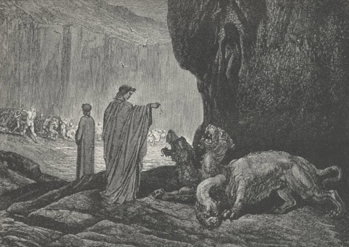
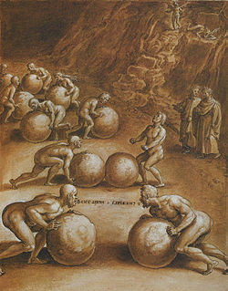
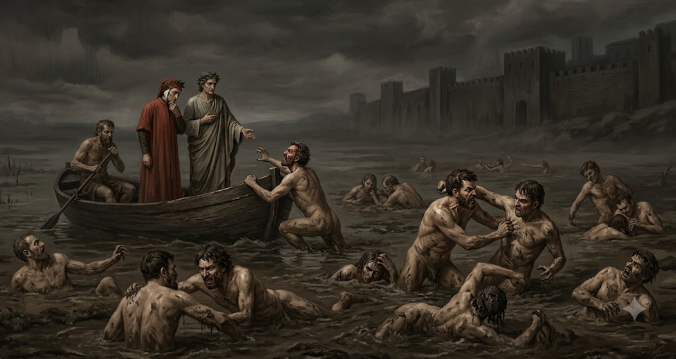
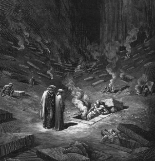
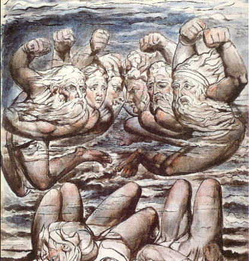
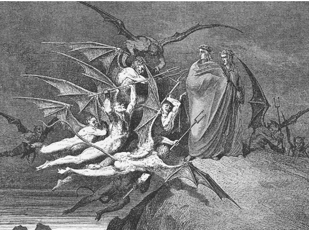
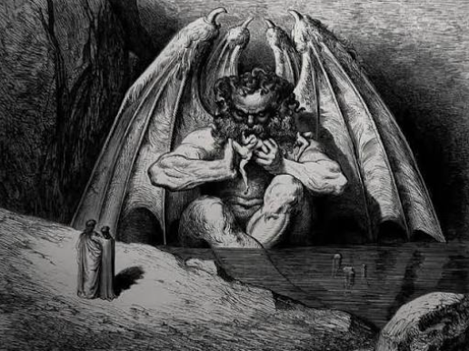

¿Qué es el Infierno?
En la obra de Dante, el Infierno es el reino de la justicia divina y el castigo eterno. No es solo un dolor físico, sino la consecuencia espiritual irreversible de las elecciones humanas: las almas reciben un castigo que puede reflejar la naturaleza del pecado cometido, o ser radicalmente opuesto, es la llamada ley del contrapaso.
Tras perderse en una selva oscura, Dante es guiado por el poeta Virgilio a través de la Puerta del Infierno, iniciando un descenso en espiral hacia el centro de la Tierra para comprender el verdadero precio de dar la espalda a la virtud.
Limbo
Aquí habitan los que no tuvieron la oportunidad de conocer a Cristo, pero que vivieron con rectitud y sin maldad.
Castigo: no sufren tormento físico, pero viven en un estado de deseo eterno y de ausencia de la presencia de Dios. El castigo es más intelectual que corporal.
Guardián: no hay un guardián específico; este círculo se caracteriza por la ausencia de la gracia divina.
- Sin pecado grave, pero sin la gracia divina.
- Viven en una especie de vacío eterno y melancólico.

Lujuria
Los impulsados por la pasión desenfrenada son arrastrados por un torbellino eterno, símbolo de su falta de control.
Castigo: son lanzados por un torbellino sin fin que los hace girar sin descanso.
Guardián: Minos, quien asigna a cada alma su lugar en el Infierno.
- El viento los golpea sin tregua.

Gula
Es considerado uno de los siete pecados capitales. Es el exceso desordenado en comer y beber.
Castigo: El castigo es una lluvia eterna fría, sucia y maldita de agua, granizo y nieve. Permanecen tendidos en el barro inmundo aullando como perros, son desgarrados y atormentados por Cerbero.
Guardián: Cerbero, se lo describe como un monstruo de tres cabezas o tres fauces con ojos rojos, barba negra, vientre enorme y garras afiladas que desgarran a los condenados mientras ladra ferozmente.
- La glotonería los reduce a una condición bestial.
- El barro representa la degradación de sus hábitos.

Avaricia
Aquí caen quienes se dejaron dominar por el deseo de acumular o por el derroche. Los avaros quieren tener cada vez más, sin compartirlo con nadie, hasta obsesionarse con su riqueza. En cambio, los derrochadores gastan sin medida despreciando lo que tienen.
Castigo: Son condenados a empujar piedras gigantes y chocan reprochándose eternamente.
Guardián: Plutón, es un mounstruo feroz que representa la fuerza de la avaricia y la codicia.
- El movimiento constante simboliza su ansiedad.
- La obsesión por lo material los condena al esfuerzo inútil.

Ira
Los violentos contra el prójimo se ven sumidos en un lago de fango y en una guerra eterna de resentimiento.
Castigo: yacen en un fango espeso y están condenados a pelear entre sí. Los perezosos (o acidiosos) quedan completamente sumergidos bajo el fango.
Guardián: Flegias, quien conduce a los condenados por el lago del fango.
- La ira se vuelve un torrente de furia.
- La pereza queda atrapada en una existencia sin propósito.

Herejía
Los que negaron la fe o la verdad religiosa son encerrados en tumbas ardientes, condenados a una eternidad de silencio y fuego.
Castigo: permanecen dentro de tumbas encendidas, sufriendo el fuego eterno junto con la ausencia de toda esperanza.
Guardián: las Furias y los demonios de la ciudad de Dis.
- La duda y la negación se vuelven prisión.
- El fuego representa la permanencia de su error.

Violencia
Aquí se castiga la violencia contra las personas, la propia vida y la naturaleza, en un paisaje de sangre y fuego.
Castigo:
- Violencia contra sí mismos/ suicidas: son transformados en árboles secos y retorcidos y las arpías les arrancan ramas constantemente provocándoles dolor.
- Violencia contra Dios: Se encuentran en un desierto de arena ardiente mientras una lluvia de fuego cae sobre ellos sin descanso
- Violencia contra otras personas: Permanecen dentro del río Flegetonte, formado por sangre hirviendo dependiendo la gravedad de sus crímenes están más o menos hundidos.
Guardián: los centauros, que vigilan y castigan a los violentos.
- Los verdugos se enfrentan a un río de sangre.
- La violencia se vuelve un ciclo sin fin.

Fraude
Los engañadores, los traidores y los corruptos son encerrados en un valle de corrupción donde el engaño se convierte en una condena concreta.
Castigo: son atormentados por demonios, se ven arrastrados por el terreno resbaloso y sufren la vergüenza de sus propias artimañas. Hay 10 fosas malditas distintas dependiendo del tipo de fraude cometido.
Guardián: los Malebranche, que custodian los recovecos del fraude.
- El fraude es un pecado de la inteligencia corrupta.
- La maldad se manifiesta en formas grotescas y torcidas.

Traición
El último círculo concentra a los traidores, sumidos en un lago helado y rodeados por un silencio absoluto, símbolo de la ruptura total con el amor y la humanidad.
Castigo: quedan enterrados en un lago de hielo perpetuo, donde el frío les priva de toda ternura y de toda conexión humana.
Guardián: Lucifer, quien reina en el centro del Infierno.
- La traición es el pecado más grave.
- El hielo representa la pérdida de todo calor humano.
